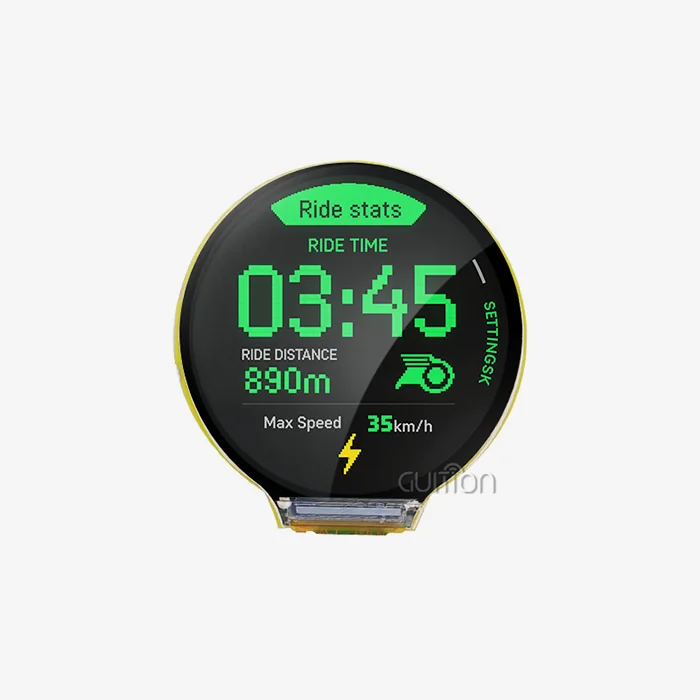

ESP32-2424S012N_I
Guition · ESP32 C3 screen
ESP32-2424S012N_I is an 1.28" 240x240 IPS ESP32 display board by Guition based on the ESP32-C3 with 4MB flash, - PSRAM.
Features, ports & interfaces
- SPI display (4-wire)
- 4 MB flash
- Wi-Fi 4 (802.11 b/g/n, 2.4 GHz) – version from the ESP32-C3 datasheet
- Bluetooth 5 (LE) – version from the ESP32-C3 datasheet
- Speaker interface
Specifications
| Parameter | Value | Source |
|---|---|---|
| Screen size | 1.28" | source |
| Resolution | 240x240 | source |
| Panel | IPS | source |
| Display interface | SPI | source |
| Display driver | GC9A01 | source |
| Touch | None | source |
| MCU / SoC | ESP32-C3-MINI | source |
| MCU family | ESP32-C3 | |
| CPU frequency | 160MHz | source |
| Flash | 4MB | source |
| PSRAM | - | source |
| SRAM | 400KB | source |
| Wi-Fi | Yes | source |
| Bluetooth | Yes | source |
| Category | ESP32 Display Module | |
| Connectivity | Wi-Fi + Bluetooth | source |
| Dimensions | 38.5mm × 37.0mm | source |
| Interface detail | 4-wire SPI | |
| ROM | 384KB | source |
| Software / dev support | Arduino IDE, ESP-IDF, MicroPython, Mixly | source |
| Speaker interface | Yes | source |
| Vendor | Guition |
Official links & documentation
Files
Offline copies are available on the interactive page.